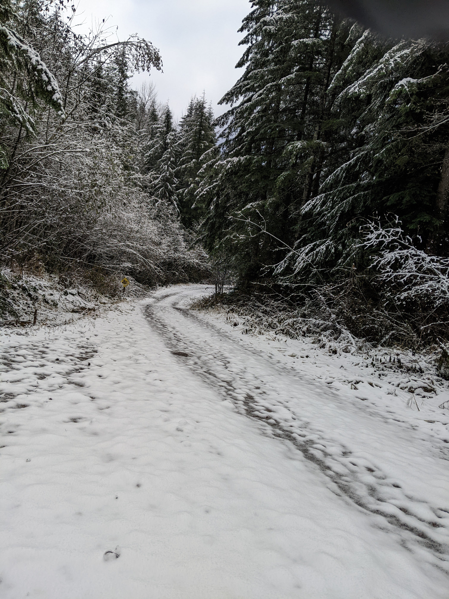

This post was supposed to be about tips to crush New Years Resolutions. I wanted to share pointers like one of those people who have life figured out. It took less than 2 weeks to be reminded of my own fragility, impermanence and imperfection. Inspite of marginal success I’ve had in the past, I’m still a work in progress, we all are. If you want tips on making and actualizing your resolutions, Google Is Your Friend. In place of that, I’d like to talk about seemingly unrelated things: a season, a minute and a dream. Let’s dive in.
- A season

Its winter here, so lets talk about that. Growing up in a tropical country with all year summer, I wasn’t fond of winter when I moved to the Pacific North West (PNW). It seemed as though every other season had its merits: Spring and Fall were good running weather and summer was well, summer. I struggled to find the silver lining in the cold, dark, rainy days that characterize PNW winter. Years later I’ve come to embrace this hibernation period as opportunity for connection and reflection. I’ve been going through winter both literally and metaphorically. For a while I’ve been bummed about how my genes are getting in the way of my goals and fulfillment. After months of struggle I’ve come to embrace my limits and slowly but surely the silver lining is making an appearance. Contrary to popular belief, we are more capable of acceptance than we think are. We have accepted that winter will come and make do with what we have. In the same way we can learn to embrace lemons that come in our way. Forget “off the rack” resolutions and all the versions you should be. If the season calls for moving on, scaling down or simply coasting; embrace it, live in it.
- A minute

Photo by Agê Barros on Unsplash
Its easy to get people’s attention if you ask for just a minute of their time. In the grand scheme of a day, a minute is so insignificant that we don’t give it much thought. Insignificant doesn’t mean inconsequential though; nothing drives this point home than planking for a minute. A minute filled with intentions can be very powerful. It can build up to minutes, even hours of solid effort. Stack up days like that and you have built up momentum to get the ball rolling. This year I’ve resolved to spend at least a minute everyday to either write, connect, seek novelty or any combination of thereof. It doesn’t matter that minute leads to hours or not, the minute is enough and I can always count on it. If your goals feel too big, a minute might just be what you need. It wont always work but it will at the very least set you up for success.
- A dream
Let me tell about a somewhat strange dream I had recently. I was at a funeral, I saw familiar faces but I couldn’t reach them, I was speaking it looked as if they neither saw nor heard me. Took a minute to register that I was infact a ghost at my own funeral. I don’t think I’ll ever forget this dream or the chills I woke up with. I don’t read into much dreams but this one is easy to explain; my brain was processing deaths of 2 people I knew that happened over the holidays. I see it as both and an oracle; we all die, eventually. In the dream I thought how I could have done it differently, the words I wished I said, things I wished I did; those became my resolutions. There is so much noise around resolutions today. Sure being skinny and rich maybe (subjectively) nice but I doubt it will come to mind at the end of the road. When deciding on priorities, its important to remember that we are on a timer that could could go off any minute. Its in our best interest to choose wisely.
That’s it, the 3 cents I promised. I hope you find them useful now that resolutions discussions feel appropiate. Pick the things you’d regret on your deathbed, dedicate a minute and embrace your season. Happy New Year!